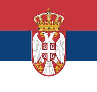
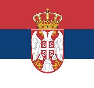

Gorazde, a hero city in eastern Bosnia, the only BiH city on the Drina that managed to defend itself in the last war, and today a true small economic miracle. For a long time, this small town flourished as a stop on the trade route that led from Serbia and Montenegro to Sarajevo. The Drina is a favorite place for swimming and rafting, so cafes and restaurants on the banks of the river are always full. South of Gorazde is one of the largest medieval cemeteries in the country. It is assumed that there are about 600 medieval tombstones in one cemetery on the hillside.
In Gorazde, you have various options for accommodation, including hotels, guesthouses, private apartments, and similar. Many of them offer comfortable accommodation and hospitality that will enhance your stay in this city.
In Goražde, you can find diverse shops and boutiques offering a wide range of products. Explore local stores and enjoy shopping in this vibrant city.
In Goražde, you can enjoy a diverse gastronomy that caters to everyone's taste. Restaurants, cafes, and bakeries offer authentic local specialties such as ćevapi, burek, and pizzas, as well as international cuisines. Try traditional dishes and refreshing meals for a complete culinary experience.
Experience the lively atmosphere of Goražde with numerous cafes, bars, and clubs offering diverse entertainment and nightlife.
Goražde offers various sports activities for enthusiasts. Whether you enjoy hiking, cycling, or water sports, there's something for everyone.
Discover the beauty of Goražde along the banks of the Drina River, the perfect spot for excursions and relaxation. Enjoy riverside walks, picnics by the shore, and various water activities that make this city an ideal tourist destination.